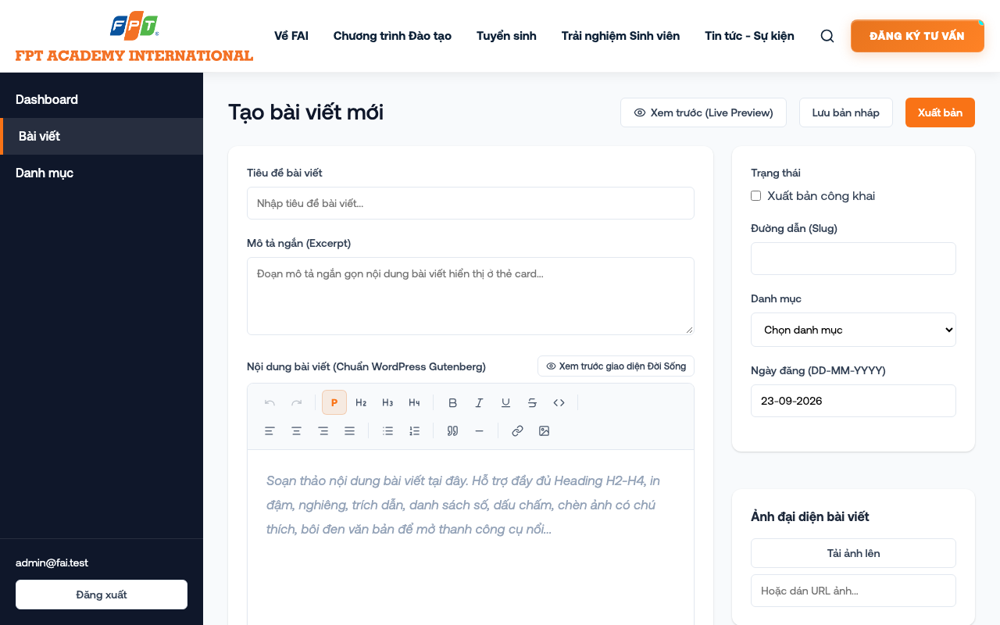
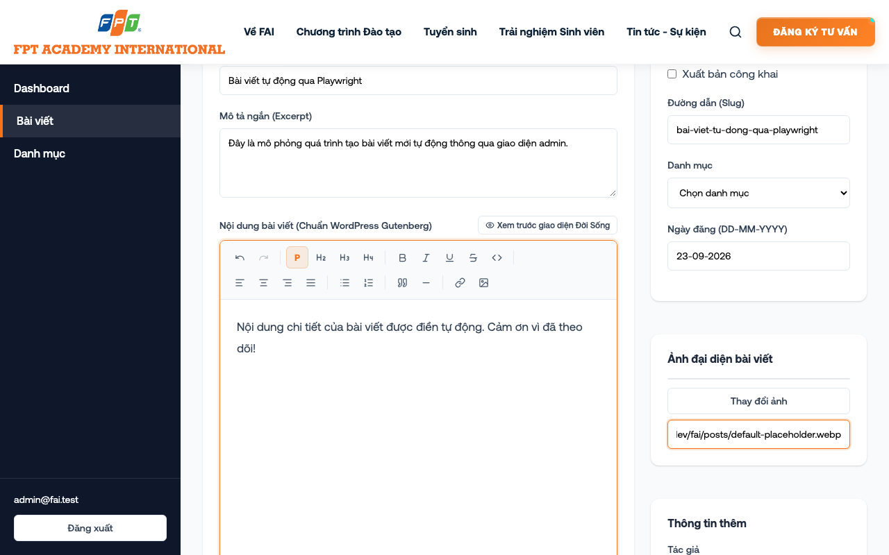
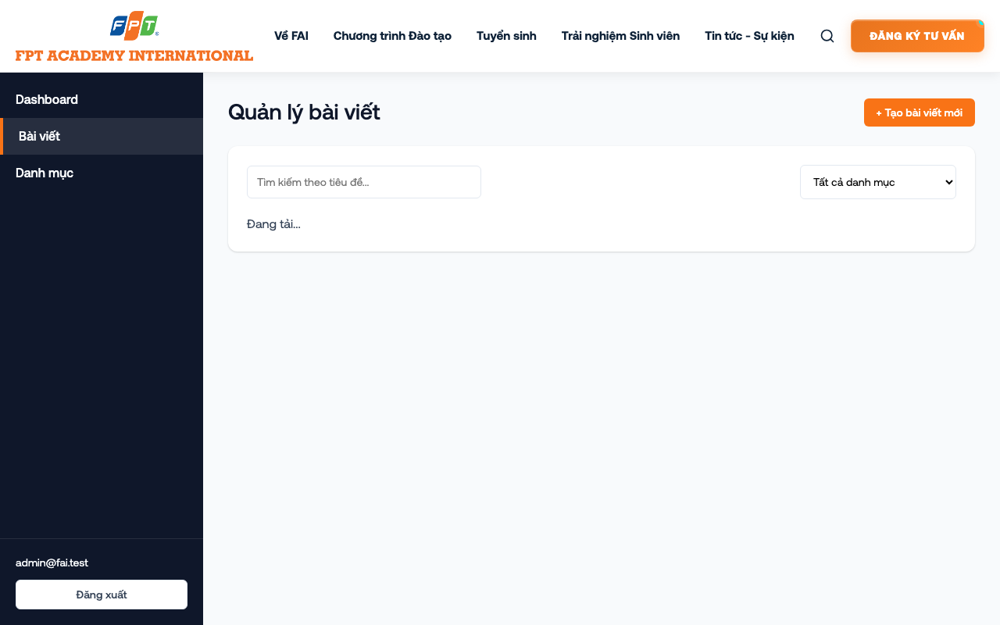
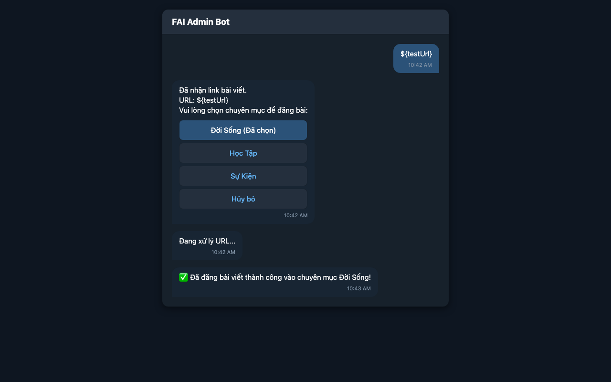
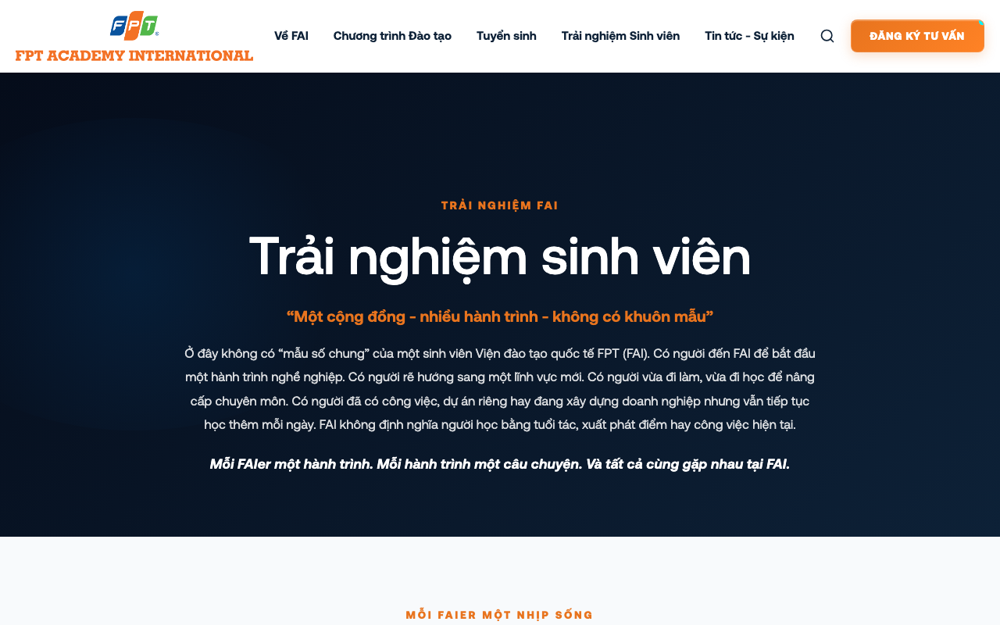

Giao diện lúc mới mở /admin/posts/new

Đã điền tiêu đề, mô tả, nội dung và link ảnh

Đăng bài thành công, hệ thống chuyển về trang danh sách

Bài viết mới đã xuất hiện tại mục Đời Sống
Người dùng (Admin) gửi link một bài viết từ trang tin FPT Academy vào bot Telegram. Hệ thống tiếp nhận, khởi tạo luồng trò chuyện và tự động bóc tách nội dung, hình ảnh từ URL để đăng lên web.

Bài viết bóc tách từ URL đã được hệ thống đăng thành công lên trang chủ.
